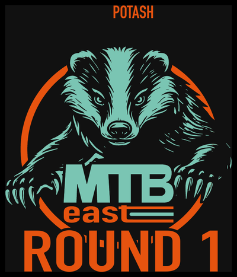
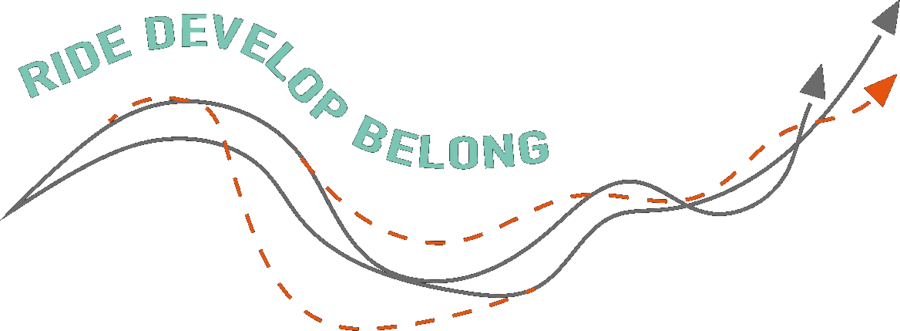

MTB EAST GAMES
MTB EAST GAMES
Games
Free mini-games from MTB East CIC — built for young riders, and a couple that anyone can play. No accounts, no cost, no catches.

AGES 5–10 · UNTIMEDTrail Sign Match
A relaxed memory game — flip cards, find pairs, and pick up real facts about MTB East and mountain biking as you go. No clock, no pressure.
Play →
ALL AGES · QUIZ
Trailhead Trivia
200 MTB and racing questions across Mixed, Daily Challenge and Picture rounds, with badges, streaks and a leaderboard.
Play →More games are on the way — this page grows as we build them.
← Back to Sofa to Singletrack